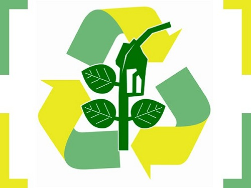
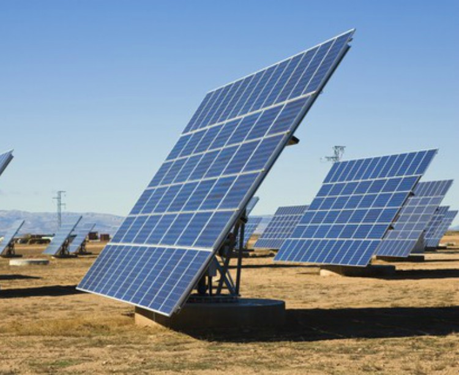
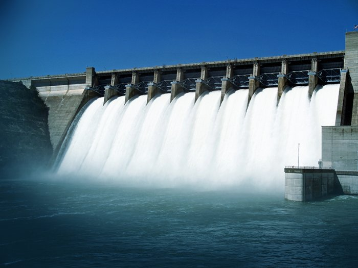

Principais Fontes renováveis

Energia Eólica
A preocupação com as fontes renováveis de energia cresce pelo mundo inteiro. A crescente nos preços de combustiveis fósseis, juntamente com o esgotamento das reservas de petróleo que estão previstas para se esgotar nas próximas décadas, e o aumento em grandes periodos de estiagem, gerados pelo aquecimento global que vem afetando diretamente nas usinas hidrelétricas tem eleado as pesquisas dos cientistas cada vez mais a pensarem fontes de energias que possam se renovar.
Entre as fontes renovaveis de energia vem se destacando a energia mecânica produzida pelos ventos, que vem contribuindo significativamente para as necessidades da população mundial, no que diz respeito à produção de eletricidade.
A conversão de energia cinética vem sendo usada a certa de mais de 3000 anos pela humanidade. Com grande importância na agricultura, os moinhos de vento era designados para diversas funções, como bombeamento de água para irrigação das plantações, por exemplo.
A utilização desse tipo de energia se deu na década de 80, na Dinamarca. Desde a década de 90, a energia eólica vem apresentando um crescimento acelerado em todos os cantos do mundo, chegando a uma produçào de 120 GW ao final do ano de 2008, seundo o Global Wind Energy Council(GWEC).
Aqui no Brasil, ainda segundo a GWEC, a produção chegou aos 341MW ao final de 2008. As estimativas da eletróbras para a produção de enerfia eólica para o ano de 20019 é de 360MW, o que ainda é pouco se comparando com quase 103GW produzidos pela hidrelétricas do pais.
Biocombustível
Os biocombustíveis , assim como são chamados, já indicam um tipo de combustível de origem biológica ou natural. Trata-se de uma fonte renovável de energia que é feita por meio da queima de biomassa ou de seus derivados, como por exemplo o etanol, o biodisel, o biogás. entre outros.
A biomassa é tida como qualquer material de constituição orgânica que pode ser utilizada para algum tipo de produção de energia. desta forma, os biocombustíveis correspondem a uma das formas sob as quais a biomassa pode ser empregada, fora que são tidos como uma alternativa muito econônimica e ambieltal para diminuir a queima dos combustiveis fósseis.
Geralmente, os "Modelos" de biomassa utilizados como matérias-primas dos biocombustíveis são as plantas oleaginosas, que são aqueles vegetais que possuem substãncias em formas de óleios e gorduras que podem ser retiradas a partir de alguns tipos de processos. Entre os vegetais mais comumente empregados, os principais que se encontram no Brasil, são a cana-de-açúcar, a mamona, a palma, o girassol, o babaçu, a soja, o milho e outros. O milho é mais utilizado nos Estados Unidos da America, Pais que assim como o Brasil, produz etanol em larga escala.
Hoje em dia, o Brasil possui uma produção de etanol que supera os 21,5 milhões de barris por ano, o que é equivalente a um montante de aproximadamente 3,52 bilhões de litros. As perspectivas, segundo a Agência internacional de Energia, é a que essa produção esta prevista para aumentar em cerca de 200% até o ano de 2050, o que ira tornar o Brasil uma referência mundial em biocombustiveis.
As vantagens dos biocombustiveis são diversas por exemplo: menor indice de poluição com a sua queima e processamento: tem a possibilidade de serem cultivados e portanto são renováveis; geram empregos em sua cadeia produtiva; diminuem a dependência de combustiveis fósseis, além de aumentarem os indices de exportações do pais, favorecendo a balança comercial.
Porém por outro lado as desvantagens dos biocombustiveis, podemos mencionar: a necessidade de areas grandes para agricultura, podendo aumentar o desmatamento pela expansão da fronteira agricola; pressão sobre o preço dos alimentos, que podem ter uma diminuição na produção para dar lugar à produçãp de biomassa entre outros fatores.
De toda forma, a produção de biocombustiveis são mais favoráveis em países que possuem uma larga extensão territorial e grandes espaços produtivos, capazes de produzirem grandes quantidades de matérias-primas para serem processadas e convertidas em óleos e combustiveis.Esse cenário favorece o Brasil e os Estados Unidos, lideres mundias na produção e consumo dessa impotante fonte de energia.
Imagem ilustrativa da área coupada na produção de cana-de-açúcar
Energia Solar
A energia solar trata-se da energia proveniente da luz solar(fótons) capturada em célula de silício.É uma alternativa muito econômica, avançada e difundida pelo mundo. Utilizada há quase cinquenta anos em estações espaciais; agora se consolida comercialmente no Brasil. A parceria entre Brasil e Alemanha, referência neste campo, favorece nossos padrões de qualidade.
Todos os anos o Sol emite no Planeta Terra uma quantidade de energia milhares de vezes superior à toda energia consumida pelo homem. Aproveitá-la, além de gerar muita economia, significa também preservação ambiental e respeito ao futuro de todos. É uma fonte de energia 100% limpa e inesgotável.
O kit fotovotaico
Célula fotovoltaica é uma placa de Silício, do tamanho da palma da mão, que ao receber luz permite que os elétrons desse material se movimentem, produzindo então a corrente elétrica contínua. O módulo (painel/placa) Fotovoltaico é o agrupamento de várias células numa única placa. São instalados em áreas com plena incidência de luz solar, preferencialmente telhados, ou então no solo, desde que livre de sombras. O processo é simples: são fixados com parafusos por pequenas alças de sua própria estrutura. Então, conectores e fios conduzem a energia até o Inversor (Conversor), aparelho que transforma corrente elétrica contínua (CC) em corrente elétrica alternada (CA) – o tipo convencional de eletricidade, alta ou baixa tensão.
Só existe uma desvantagem desta energia, seu alto custo de obtenção, que faz dela uma fonte escassa para os países mais pobres como o Brasil. Os países que mais utilizam energia solar são Japão, Alemanha e Estados Unidos. Através da conscientização, esta fonte de energia limpa pode se tornar mais utilizável, nossos bolsos agradeceriam assim como o meio ambiente.
Hidráulica
A energia hidrelétrica é aquela obtida pela força das águas. Essa energia é produzida pelo aproveitamento do potencial hidráulico, ou seja, da força das águas dos rios, mediadas pela construção de usinas hidrelétricas, aquelas que fornecerão energia elétrica para a população.
Importante destacar que no Brasil mais de 90% da energia elétrica produzida são fornecidas pelas usinas hidrelétricas uma vez que o país possui grande quantidade de rios caudalosos sendo seu potencial hidráulico (Bacias: Amazonas, São Francisco, Tocantins, Paraná, Uruguai) o terceiro melhor do mundo, depois da Rússia e da China.
O processo de produção de energia atráves de hidrelétricas é feita devido a um processo de transformação de energia potencial,cinética e mecânica que, por sua vez, chega para a população em forma de energia elétrica transportada pelos fios. de forma simplificada, a usina hidrelétrica aproveita a energia hidráulica para a produção de energia elétrica.
Vantagens e Desvantagens da Energia Hidrelétrica
A despeito de ser considerada um energia renovável, limpa (não emite poluentes na atmosfera), a energia hidrelétrica uma vez que precise da construção de usinas hidrelétricas para ser produzida, acarreta alguns impactos ambientais, a saber: alagamento de áreas, destruição de ecossistemas (fauna, flora, solo), extinção de espécies, destruição de comunidades ribeirinhas, quilombolas e indígenas. Nesse sentido, importante ressaltar que para a construção de uma usina hidrelétrica, os locais determinados são afastados dos centros urbanos, porém próximo de muitas comunidades que vivem da terra, da caça, da pesca.